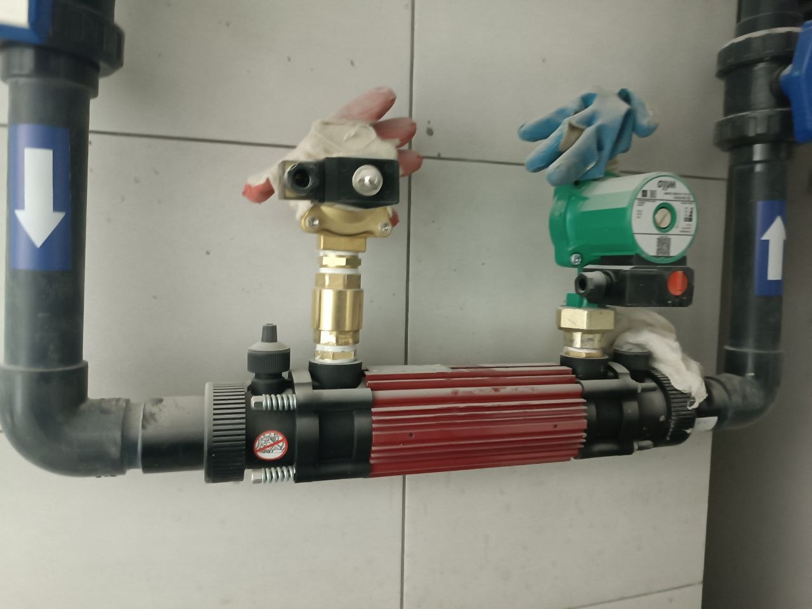

Введение
Как выбрать подогрев бассейна под свой режим использования
Сначала определите, когда и как часто бассейн должен быть тёплым: поддерживать заданную температуру весь сезон или прогреваться к отдельным дням. От этого зависят требуемая тепловая мощность и разумный способ нагрева.
Тепловой насос, котёл с теплообменником и электрический нагреватель сравнивают по фактической мощности в нужных условиях, доступному источнику энергии, режиму работы и теплопотерям чаши. Одно значение мощности из рекламной таблицы не говорит, сколько времени займёт нагрев именно вашего бассейна.
Критерии
Что влияет на скорость нагрева и теплопотери
Размеры чаши и потери тепла
Для оценки начального нагрева нужны объём воды и разница между текущей и желаемой температурой. При поддержании температуры важны также площадь зеркала, погода, ветер, температура воздуха и режим использования.
Источник тепла и условия работы
Проверьте, какой источник тепла доступен и какую мощность можно выделить. Для теплового насоса важны температуры воздуха и воды в данных производителя; для котла с теплообменником — доступная мощность и параметры двух контуров; для электрического нагревателя — допустимая мощность подключения.
Какой режим температуры нужен
Уточните не только целевую температуру, но и когда вода должна её достичь. Чем больше нужный перепад и короче желаемое время нагрева, тем выше требуемая тепловая мощность; это предварительно оценивают по объёму и тепловому балансу.
Накрытие между купаниями
Накрытие ограничивает испарение, которое является одним из заметных путей потери тепла, особенно когда бассейн не используется. Эффект зависит от погоды и режима применения; накрытие не заменяет расчёт мощности нагревателя.
Расчет
Получить расчет стоимости
Подготовим ориентир бюджета, состав работ и инженерные решения под ваш участок, дом и желаемый формат эксплуатации.

Инженерия
Как оценить энергию на первоначальный нагрев
Для грубой оценки энергии, необходимой только для нагрева воды, можно использовать тепловой баланс: Q ≈ 1,163 × V × ΔT. Здесь Q — тепловая энергия в кВт·ч, V — объём воды в м³, ΔT — повышение температуры в °C. Коэффициент получен из теплоёмкости воды; расчёт не учитывает потери в окружающую среду и особенности оборудования.
Пример: для чаши объёмом 30 м³ при повышении температуры на 10 °C оценка составит Q ≈ 1,163 × 30 × 10 = 349 кВт·ч тепла. Это не расход электричества и не срок нагрева. Идеальное время можно оценить как Q, делённое на тепловую мощность нагревателя в кВт, но фактический нагрев будет зависеть от меняющейся мощности и теплопотерь.
Тепловой насос расходует электрическую энергию в зависимости от своей фактической эффективности при данных условиях; у котла и теплообменника результат зависит от мощности источника и передачи тепла. Поэтому паспортную мощность и COP сравнивают для расчётных температур и расходов. Для оценки потребления электроэнергии систем бассейна см. отдельный материал.
Этапы
Какие данные подготовить для подбора системы
- Указать объём чаши или её длину, ширину и среднюю глубину, а также тип бассейна и место установки.
- Задать желаемую температуру воды, начальную температуру и период, когда бассейн должен быть готов к купанию.
- Сообщить, будет ли чаша накрываться, где она расположена и какие условия погоды характерны для периода эксплуатации.
- Уточнить доступный источник тепла и его свободную мощность; для теплового насоса сверить рабочие условия выбранной модели.
- Передать схему циркуляции, расчётный расход через нагреватель и ограничения по подключению из паспортов оборудования.
Рекомендации
Что проверить перед запуском подогрева
Нагреватель включают в рассчитанную схему циркуляции. Фактический расход через устройство, допустимое давление и последовательность подключения проверяют по его руководству; для теплового насоса отдельная модель может требовать байпас и настройку расхода.
Настройки автоматики и температурный режим согласуют с типом источника тепла и режимом бассейна. Выбор накрытия влияет на потери в периоды простоя, а подбор самого покрытия разобран в статье о накрытиях. Подробное сравнение тепловых насосов вынесено в отдельную статью.
Консультация
Заказать консультацию
Ответим на вопросы, оценим исходные данные и предложим следующий шаг: концепцию, выезд специалиста или предварительный расчет.